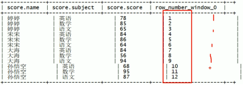
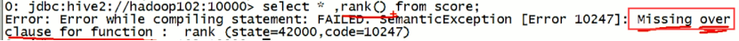

这3个函数在大数据分析中很常用
(1) 可以通过over中的关键字设置范围。
(2) hive的窗口大小默认是从起始行到当前行的
(3) 一行一个窗口
(1) HQL数据处理时，是一行一行执行的。每行都会有一个窗口，扫描到一行就执行一次。
(2) 使用over设置窗口大小后，窗口有2个重要属性，步长和长度，通过一系列参数指定。等其他计算执行完得到中间结果集，再执行窗口关联的聚合函数得到最终结果集。
1st 离线时就固定的一行一行的执行，实时分析时可以灵活设置。
(1) 分区限制的是窗口移动的范围，如果没分区，头尾就是表的头尾，分区后头尾就是分区的头尾。
name，orderdate，cost
jack,2017-01-01,10
tony,2017-01-02,15
jack,2017-02-03,23
tony,2017-01-04,29
jack,2017-01-05,46
jack,2017-04-06,42
tony,2017-01-07,50
jack,2017-01-08,55
mart,2017-04-08,62
mart,2017-04-09,68
neil,2017-05-10,12
mart,2017-04-11,75
neil,2017-06-12,80
mart,2017-04-13,94
[dc@hadoop102 datas]$ vi business.txt
create table business(
name string,
orderdate string,
cost int
)
ROW FORMAT DELIMITED FIELDS TERMINATED BY ',';
load data local inpath "/opt/module/datas/business.txt" into table business;
select
name,count(*) over ()
from business
where substring(orderdate,1,7) = '2017-04'
group by name;
select name,orderdate,cost,sum(cost) over(partition by month(orderdate)) from business;
select name,orderdate,cost,
sum(cost) over() as sample1,--所有行相加
sum(cost) over(partition by name) as sample2,--按name分组，组内数据相加
sum(cost) over(partition by name order by orderdate) as sample3,--按name分组，组内数据累加
sum(cost) over(partition by name order by orderdate rows between UNBOUNDED PRECEDING and current row ) as sample4 ,--和sample3一样,由起点到当前行的聚合
sum(cost) over(partition by name order by orderdate rows between 1 PRECEDING and current row) as sample5, --当前行和前面一行做聚合
sum(cost) over(partition by name order by orderdate rows between 1 PRECEDING AND 1 FOLLOWING ) as sample6,--当前行和前边一行及后面一行
sum(cost) over(partition by name order by orderdate rows between current row and UNBOUNDED FOLLOWING ) as sample7 --当前行及后面所有行
from business;
select
name,orderdate,cost,
lag(orderdate,1,'1900-01-01') over(partition by name order by orderdate ) as time1,
lag(orderdate,2) over (partition by name order by orderdate) as time2
from business;
select * from (
select name,orderdate,cost, ntile(5) over(order by orderdate) sorted
from business
) t
where sorted = 1;


namesubjectscore
孙悟空语文87
孙悟空数学95
孙悟空英语68
大海语文94
大海数学56
大海英语84
宋宋语文64
宋宋数学86
宋宋英语84
婷婷语文65
婷婷数学85
婷婷英语78
[dc@hadoop102 datas]$ vi score.txt
create table score(
name string,
subject string,
score int)
row format delimited fields terminated by "\t";
load data local inpath '/opt/module/datas/score.txt' into table score;
计算每门学科成绩排名
select name,
subject,
score,
rank() over(partition by subject order by score desc) rp,
dense_rank() over(partition by subject order by score desc) drp,
row_number() over(partition by subject order by score desc) rmp
from score;
name subject score rp drp rmp
孙悟空 数学 95 1 1 1
宋宋 数学 86 2 2 2
婷婷 数学 85 3 3 3
大海 数学 56 4 4 4
宋宋 英语 84 1 1 1
大海 英语 84 1 1 2
婷婷 英语 78 3 2 3
孙悟空 英语 68 4 3 4
大海 语文 94 1 1 1
孙悟空 语文 87 2 2 2
婷婷 语文 65 3 3 3
宋宋 语文 64 4 4 4
LATERAL VIEW udtf(expression) tableAlias AS columnAlias (',' columnAlias)*
select 虚拟表的列名from explode_lateral_view LATERAL VIEW explode(split(要拆的列名,',')) 虚拟表表名 as 虚拟表的列名;
select mycol1, mycol2 from basetable
lateral view explode(col1) mytable1 as mycol1
lateral view explode(col2) mytable2 as mycol2;